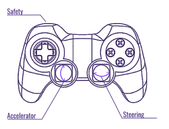

Please read this entire guide carefully before coming to the MuSHR Lab (CSE 002) to conduct experiments.
Questions or issues? Contact course staff on Ed or email Sidharth Talia.
CSE 002 is located in the basement floor of the Allen Center. When you enter into the Allen lobby, take the elevator down one floor, then take a left out of the elevators. You will need your Husky card to access 002.
The lab will be open throughout the week.
Remember to keep your Husky Card with you at all times. CSE 002 requires card-key access. Don’t lock yourself out!
Do not move the furniture in the middle of the room. This is a part of the map, which you will use for localization.
Start charging LiPo batteries (1 per car) with chargers located near your workstation. Only charge batteries when you are physically present in the lab. Do not leave them charging overnight.
Unplug the battery from your MuSHR car and return them to their table. Put the car back on the table.
Don’t leave your belongings. Clean up your workspace (any cables, tools, etc.) and return anything you took to where you found them.
Push your changes to GitLab. You can leave your code on the car, but please don’t change any files outside of ~/catkin_ws.
If you are the last person to leave the lab: do a quick check around the room to make sure that none of the chargers are in charging mode (should flash green to indicate not-charging), and turn off the lights.
Official Guides: MuSHR Quickstart | Build Instructions | System Overview | Teleoperation
The following is a supplementary guide to getting started with MuSHR cars in the lab. Reading the official guides before coming in will save you valuable debugging time.
Each MuSHR car requires 1 LiPo battery to power the servo motor and the on-board Jetson computer. Please review LiPo battery guide for information about how to use/charge the LiPo batteries. Remember to only charge batteries when you are physically present in the lab.
After connecting the LiPo battery, the on-board Jetson computer should boot up within a few seconds (2 mins max) and a green light should turn on inside the case of the car. The battery should be placed in the holder at the bottom of the car. Ensure that the cables and connectors won’t get tangled with the wheels once they start spinning.
Each car is connected to the “University of Washington” WiFi and has a static IP address. Check here to find the username and IP address for your car. Then, from your workstation, SSH into the car ssh <username>@<robot_ip_addr> -X with the password prl_robot. Do not change the password, username, or hostname of the robot, otherwise the car cannot be used by the next person.
To set up the network connection, open a separate terminal from the workstation and set export ROS_MASTER_URI=http://<robot_ip_addr>:11311. This connects your workstation ROS session to the car (using the car as the ROS Master).
Note: For every new terminal you open on your workstation, remember to set the
ROS_MASTER_URI! Otherwise, your workstation will look for a local ROS Master.
To teleoperate the robot, press the PS Button on the PS controller. Once the controller is connected, the LED should stop flashing white. Inside the SSH session, run roslaunch mushr_base teleop.launch. If no errors are thrown (everything goes right), you should be able to accelerate and steer the car with the joystick. As a safety feature, teleoperation will only work while you hold down the left bumper button (L1).

PS Joystick Controls
Note: You’ll need to work with several terminal sessions on the car itself while running your projects. We recommend that you create a tmux session for each command, to more easily run multiple commands in parallel.
In your local terminal (where you set ROS_MASTER_URI), you should be able to list the current ROS topics being published by the car with rostopic list. You should be able to see all the published sensor feeds from the camera, LIDAR, etc.
Start rviz, click the “Add” button on the bottom left corner, select “By Topic”, and add a “Laser” or “Camera” topic to visualize.
Official Debugging Guides: Workflow & Troubleshooting
As in most cases with physical robots, things will go wrong. Be patient with the debugging. Read the Workflow & Troubleshooting tutorial for additional tips.
In general, if something isn’t working, try connecting directly to the on-board Jetson computer with an HDMI cable. Unplug the RealSense and LIDAR USB cables (blue and gray wires) and connect a keyboard and mouse. (There are extra HDMI-DVI cables, keyboards, and mice by the car storage table.) The Jetson also runs Ubuntu; you can log in to the robot or prl_robot user account with the password prl_robot.
Most of the workstations in the lab are all-in-one PCs and can’t act as a monitor for the Jetson. However, we’ve left one standard tower PC workstation (artemis) unassigned to any group to be used for this purpose. You can unplug the mouse, keyboard, and display port cable from the back of the PC, then plug those into the car and run any commands needed
Here are some common issues:
The car probably disconnected from the UW Wifi. Connect to the HDMI port and follow the network setup instructions here. Make sure the robot is on the “University of Washington” WiFi. Check the IP address with ifconfig. You should be able to ping the robot ping <robot_ip_addr> from any computer on the “University of Washington” Network, including your workstation.
rostopic list, or launch teleop.launch
This probably means something is wrong with the network connection. Check that ROS_IP and ROS_MASTER_URI are set correctly. See this for more info.
Check that the PS Controller is charged. You can charge it with a mini-USB cable from the steel rack. If the controller is blinking white, then something went wrong with the Bluetooth connection. Connect to the Jetson’s HDMI port and follow the Bluetooth setup instructions in Step 14 of the Hardware Guide.
VESC is the servo motor controller. This means the battery needs to be charged or isn’t connected properly.
Check that the RealSense cable (blue USB) is plugged in. (That said, your projects won’t use the RealSense at all.)
All cars workstations have ROS Melodic and MuSHR dependencies pre-installed. Unlike in your virtual machine, all dependencies are installed locally so you can directly interface with hardware and network devices from the workstation.
This also means you can easily brick the system with careless
sudo apt-get installorsudo apt-get purgecommands. So be very careful when installing additional dependencies and copy-pasting random code from StackOverflow. Be particularly skeptical of solutions that require reinstalling NVIDIA drivers, etc.
The Catkin workspaces on the cars and workstations are slightly different from the VMs used for the projects. Dependencies and your code will live inside ~/catkin_ws on the car (you should only run rviz or rostopic list on workstations):
$ # SSH to the car
$ ssh <username>@<robot_ip_addr>
$ source ~/.bashrc
$ # Workspaces should already be sourced in the .bashrc file
$ # Clone your repo
$ cd ~/catkin_ws/src
$ git clone https://gitlab.cs.washington.edu/cse478/25wi/your_repo_name.git mushr478
$ # Build your workspace
$ cd ~/catkin_ws
$ catkin_make
$ # Don't forget to source your workspace in every terminal you open!
$ source ~/catkin_ws/devel/setup.bashSince each car is assigned to one group, you can leave your code on the cars between sessions in the lab. However, cars can easily break and you might lose access to your code at anytime, so be sure to push your code to GitLab often.
The workstations are running Ubuntu 20.04. You can log into the workstations with the username capstone. The password is located on the Ed board and written on a whiteboard in the lab; do not share and do not change this!
Most commands will be run on the car, but the car won’t be able to run rviz smoothly. Rviz and ros are already installed on the workstations, but you will need to set up a workspace with your code:
$ # Activate the dependencies workspace underlay
$ source ~/dependencies_ws/devel/setup.bash
$ # Create workspace if it's not already there
$ mkdir -p ~/mushr_ws/src && cd ~/mushr_ws/src
$ # Clone your repo
$ git clone https://gitlab.cs.washington.edu/cse478/25wi/your_repo_name.git mushr478
$ # Build your workspace
$ cd ~/mushr_ws
$ catkin build
$ # Don't forget to source your workspace in every terminal you open!
$ source ~/mushr_ws/devel/setup.bashThere are 15 cars set up in the lab area for your use. Your group will be assigned one car to work with. You should only use the car that you have been assigned.
Each car should automatically connect to the University of Washington wifi with a static IP address.
172.16.77.<car #>robotprl_robotYou can unplug the HDMI-DVI cables, keyboards, and mice from the workstations if you need to connect directly to a MuSHR car’s on-board Jetson computer.